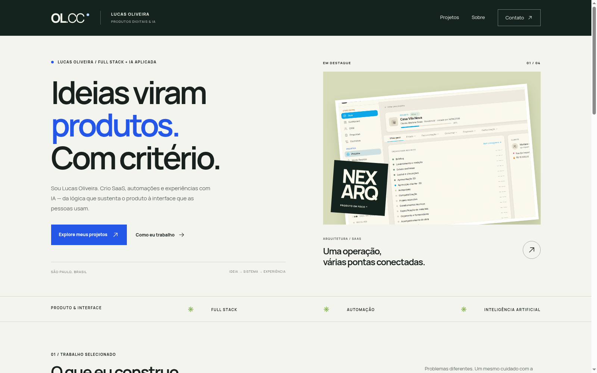
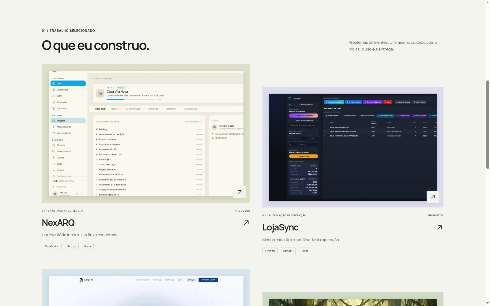
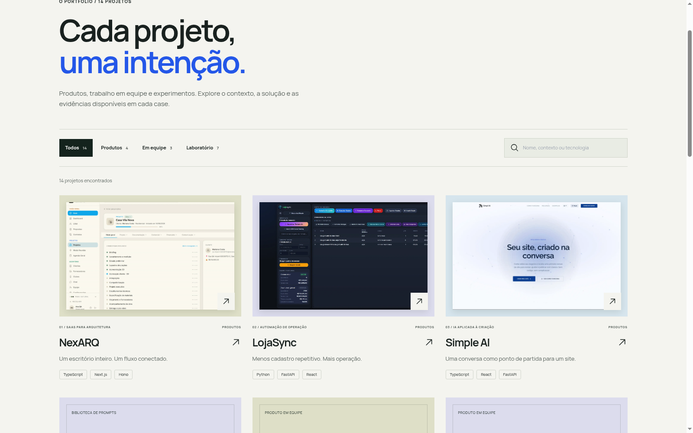
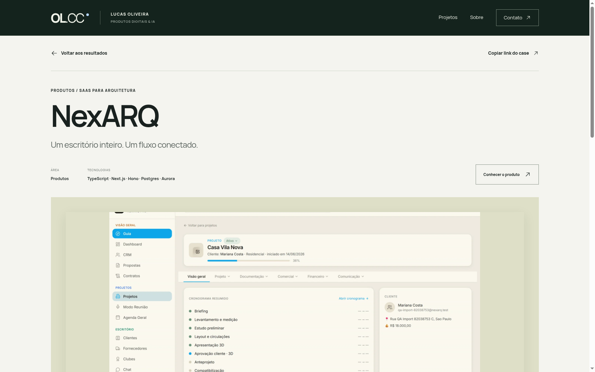
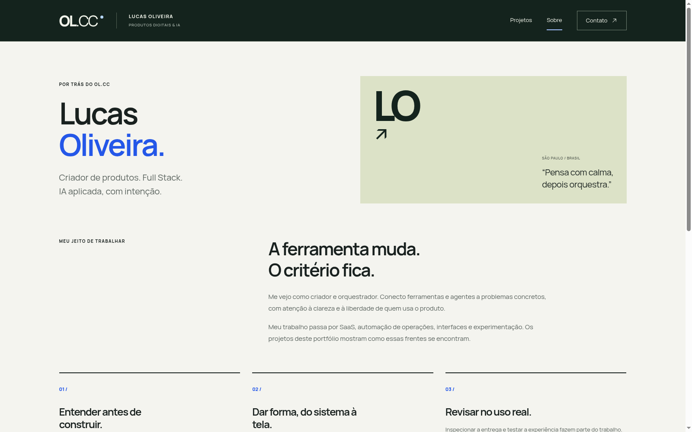
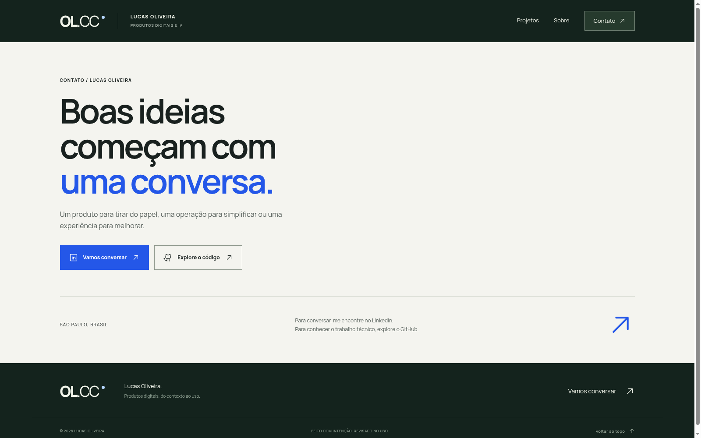

Identidade clara.
Nome humano, áreas de atuação e um produto real na abertura. O visitante entende quem está por trás do trabalho.
Produtos digitais, automações e IA aplicada. Uma apresentação de Lucas Oliveira que começa pelo que ele constrói — e mostra o contexto por trás de cada projeto.
Veja a experiência ↓O vídeo e as capturas apresentam a nova versão do portfólio, gravada em ambiente local. O domínio público pode exibir a versão anterior até a publicação do redesign.
Uma sequência simples para entender o trabalho, explorar os detalhes e iniciar uma conversa.
Nome humano, áreas de atuação e um produto real na abertura. O visitante entende quem está por trás do trabalho.
Interfaces, tecnologias e descrições conectam o problema à solução. Produtos, equipe e laboratório têm seu lugar.
Cada indicador aparece junto de seu registro original. Sem transformar volume de atividade em desempenho profissional.
Explore os destaques ou busque por nome, contexto e tecnologia no catálogo.
Conheça a intenção, veja as telas e leia as evidências que estão disponíveis.
Abra o GitHub para conhecer o código ou o LinkedIn para entrar em contato.
Capturas da aplicação funcionando. Navegação, conteúdo e resultados pertencem ao próprio portfólio.
A abertura conecta nome, atuação e um case real do NexARQ. O próximo passo é explícito: explorar os projetos.

NexARQ, LojaSync, Simple AI e The Last Arrow mostram diferentes frentes. As imagens distinguem interfaces reais de materiais do laboratório de jogos.

Busca e categorias trabalham juntas. A contagem acompanha o resultado, os filtros podem ser limpos e a URL preserva o contexto.

Contexto, solução, tecnologias e evidências datadas. Cada projeto tem um endereço próprio para compartilhar e um caminho de volta aos resultados.

Uma apresentação do modo de trabalhar: entender antes de construir, dar forma à solução e revisar a experiência no uso.

Dois destinos claros: conversar no LinkedIn e explorar o código no GitHub, pelos perfis já públicos de Lucas.

Contagens e verificação desta versão em 7 de setembro de 2026. Layouts testados em 360, 390, 768 e 1440 px. Indicadores dos projetos têm sua própria data nos cases.
Comparação com a versão anterior, inspecionada em 7 de setembro de 2026.
| Percurso | Versão anterior | Nova apresentação |
|---|---|---|
| Primeira impressão | Avatar de ferramenta, score e atividade | Lucas Oliveira, áreas de trabalho e produto real |
| Explorar o trabalho | Cards agrupados, sem case navegável | Busca, categorias e páginas de projeto |
| Compartilhar | Troca de seção em estado local | Seção, busca, filtro e case representados na URL |
| Entender resultados | Indicadores distantes do contexto | Evidências por projeto, com data original |
| Próximo passo | Contato disperso | LinkedIn e GitHub em percursos explícitos |
Fonte: análise local, código e evidências do redesign. Conteúdo dos projetos baseado no catálogo público e no recorte de 13 de agosto de 2026.
Conheça o endereço público de Lucas Oliveira. A nova experiência mostrada nesta vitrine aguarda publicação no domínio.
Abrir portfólio público ↗Não é necessário instalar um aplicativo. O link abre uma nova aba.